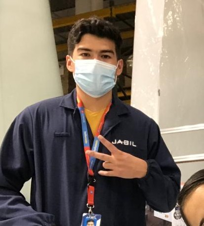

Bubbaloo
"Se vienen cosas grandes"
Carlos Wonka
Wonka es una marca de goma de mascar o “chicles” creada por Carlos Wonka en 1964.
Su popularidad inicio gracias a que estos chicles son únicos en su tipo, pues lo que hace especiales a estos chicles en comparación con todas
las demás gomas de mascar del mundo es que estos cambian de sabor conforme más los masticas, cosa que ninguna marca de gomas de mascar a
podido replicar hasta la fecha.
Cuenta con una gran variedad de sabores:
• 3 platos (Sopa de tomate, rosbif, pastel de arándanos)
• Fruli (Fresa, uva y limón)
• Pay de macanu (Pay de manzana, Pay de canela y Pay de nuez)
• Cumpleaños feliz (Pizza congelada, pastel de vainilla y dulces surtidos)
• Plareki (Plátano, Cereza y Kiwi)
• Noche buena (Pavo Navideño, ensalada de manzana y Ponche de frutas)
• Pizza (Puré de tomate, pepperoni y queso)
• 3 chocolates (chocolate de leche, chocolate blanco, chocolate oscuro)
• Fresh (menta, hierbabuena y sándalo)
Cuenta con 3 presentaciones:
• Rellenitos Wonka: Goma de mascar con relleno de sabor
• Laminitas Wonka: Goma de mascar en forma de láminas
• Burbujas Wonka: Goma de mascar en forma de bolitas especiales para hacer burbujas
Anis Bolaños
Estudiante de Ing. en Sistemas Computacionales, Su mayor hobbie es experimentar con todas las tecnicas de pintura siempre en busca
de crear algo nuevo, aficionada de las nuevas tecnologías y todo lo que estas pueden ofrecer en innovarse a si mismas.
|

|
Carlos Mata
Estudiante de medio tiempo, baterista en una banda llamada y productor musical en un estudio de grabación llamado Niebla estudios.
Toca la bateria desde los 16 años y siempre le ha apasionado la musica y las computadoras.
|
|
Jese Girón
Por el día soy estudiante y por la noche soy maquilero
En un principio iba a estudiar derecho o administración pero la constitución está bien aburrida así que ahora estoy en el Tec
En el pasado dibujaba pero ya no me da tiempo
|

|